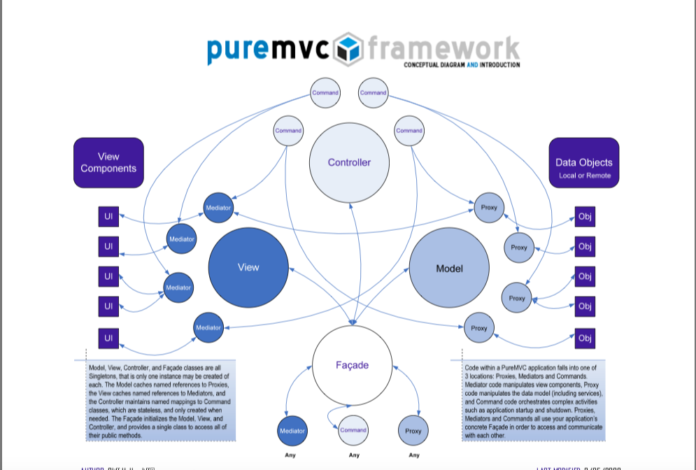

据说是在游戏开发的时候，利用 Cocos Creator 来做的时候，对于复杂的情况下，实际上没有一个比较完整的架构是会比较恼火的。所以看到很多人都用了 PureMVC 来进行做管理框架。而在之前所涉及的一个游戏中，也看到在 Cocos2D-lua 中有过 PureMVC-LUA 的实现来做的。/关于使用PureMVC-LUA进行开发的一个过程。
架构图

其中就用到来一个 Facade 模式，6 个角色。
角色
- Facade 这个用来连接 Model, View, Controler，外部的组件（角色）不会直接访问 这三者，而是通过 Facade 来进行。M/V/C 及 Facade 都是单例的。
- View/Mediator。Mediator 会通过 Facade 注册到 View中。由其负责管理其所引用的一个或多个 View Components ，而规范的来说，各个 View Components 会将其自身的一些 API 暴露给 Mediator。其主要职责：是处理 View Component 派发的事件和系统其他部 分发出来的 Notification（通知）。同时因为 Mediator 也会经常和 Proxy 交互，所以经常在 Mediator 的构造方法中取得 Proxy
- Model/Proxy。Proxy 会通过 Facade 注册到 Model 中，每个 Proxy 用来管理一部分数据。这里有一个原则就是：Proxy 不监听 Notification，也永远不会被通知，因为 Proxy 并不关心 View 的状态。但是，Proxy 提供方法和属性让其它角色更新数据。 Proxy 应该是通过 Notification 的形式来通知 View 状态的变化。
- Controler/Command：Controller 保存所有 Command （实例）的映射。Command 类是无状态的，只在需 要时才被创建。 Command 可以获取 Proxy 对象并与之交互，发送 Notification，执行其他 的 Command。经常用于复杂的或系统范围的操作，如应用程序的“启动”和 “关闭”。应用程序的业务逻辑应该在这里实现。
通信
PureMVC 使用了一个观察者模式来进行相互之间的通信。你可以不用关心 PureMVC 的 Observer/Notification 机制是怎么实现的，它 已经在框架内部实现了。你只需要使用一个非常简单的方法从 Proxy, Mediator, Command 和 Facade 发送 Notification，甚至不需要创建一个 Notification 实例。
应用
实际上，多数时候，我们都不用管理 M/V/C，我们只需要自己实例化一个 Facede ，实现一些我们自己的逻辑。然后把重点聚焦于 Mediator, Proxy, Command 上就行了。
Mediator
通常，我们会将一个 Mediator 通过 Facade 来注册到 View 中，在注册的时候，我们会知道 Mediaotr 会关注哪些事件，并为其建立观察者。当我们发送通知的时候，Mediator 回调是其实现的 handlerNotification 方法
// facade.js |
//View.js |
对于每个 Mediator 所关心的事件，可以通过 mediator.listNotificationInterests() 来获取，然后为每个通知建立一个观察者，最终，则是会回调 mediator.handleNotification() 方法。
由于 Mediator 经常需要于 Proxy 交互，所以 Facade 提供了这么一个方法来获取 Proxy。我们不应该向 Proxy 发送任何的 Notification，直接调用就是了
Facade.prototype.retrieveProxy = function(proxyName) |
Command
这是一些我们实现一下游戏逻辑的地方。应用程序的业务逻辑应该在这里实现。同样，我们通过 Facade 来注册命令到 Controler。
// facade.js |
// Controler.js |
我们看到，实际上，Command 的注册，也会在 View 中建立一个观察者。
也就是说，对于 listeners 和 Comannd 都是在 View 中进行引用的。
只不过，Command 会是在 Controler 的环境内，调用 controler.executeCommand() 方法，而对于 Mediator ，则是每个 Mediator 自己的 handleNotification() 方法。
Notification
我们可以在 Mediaotr, Proxy, Command 中发送通知，但是只有 Mediator 会监听通知，进行回调。对于 Command 只会在有通知的时候，直接执行。具体而言就是 Command 的收到 Notifacation 的回调是 controler.executeCommand() 方法，而 Mediator 是其自己实现的 handleNotification()。
// facade.js |
// View.js |
那么对于 Meditor 的回调：
mediator.handleNotification.call(mediator, notification) |
而对于 Command：
controler.executeCommand(controler, notification) |
也就是说，Command 会在 Controler 内执行，而对于 Mediator 的回调，是在其自己的环境内进行执行的。
// controler.js |
MacroCommand
有两种类型的命令：
- MacroCommand 这个 Command 会执行多个 SubCommand。
- SimpleCommand 单一命令，直接调用 execute 方法进行执行。
典型的例子是在初始化的时候，执行一个初始化 Command ，而将对于注册 Proxy 等相关的 Commond 放到一个 MacroCommand 中去。